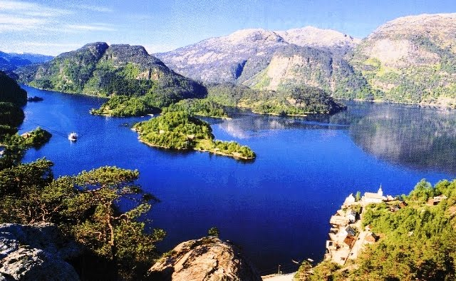
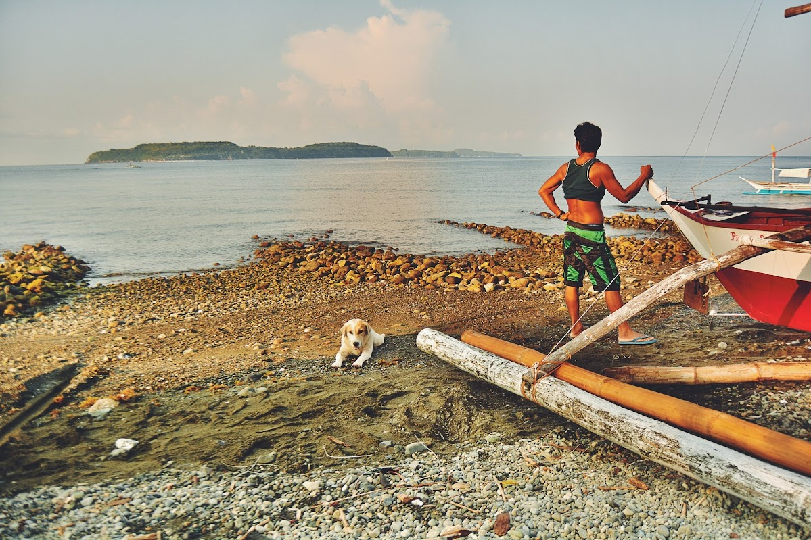
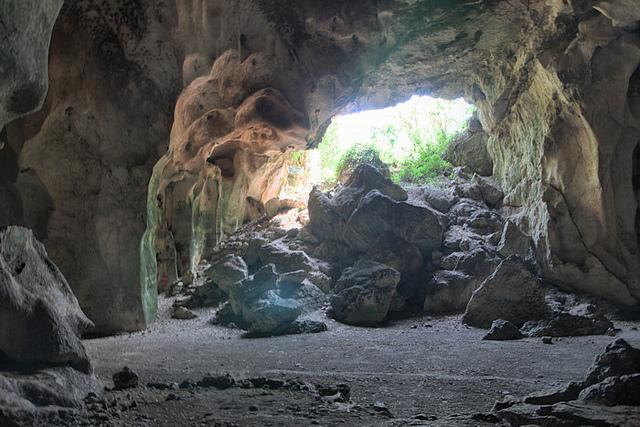

About Marinduque
A heart-shaped island with a legendary origin, a geodetic purpose, and a culture that crowns every visitor as royalty.

An Island Born from Love
Marinduque is a landlocked island province in the MIMAROPA region, cradled by the Sibuyan Sea to the north and the Tablas Strait to the south. Its unmistakable heart shape — visible even from satellite — has made it both geographically distinct and symbolically beloved.
Legend tells of the forbidden love between Princess Maring and a humble man named Duque. Unable to marry by decree of the king, the two lovers chose each other over life itself, drowning in the sea together. From their union, an island rose — named by combining their names: Maring and Duque.
Beyond mythology, Marinduque holds a remarkable scientific distinction: it is the Geodetic Center of the Philippines, the precise point from which all modern Philippine maps have been measured since 1911.
Location
MIMAROPA Region, surrounded by the Sibuyan Sea (north) and Tablas Strait (south), central Philippines
Area & Population
959.29 km² total land area · approx. 239,000 residents across six municipalities
Capital
Boac — a heritage town with a fortress cathedral and the seat of provincial government
Language
Tagalog (Filipino) with Marinduqueno dialect · English widely spoken in tourism areas
Climate
Tropical · Dry season: December–May · Wet season: June–November · Best visit: Nov–April
Religion
Predominantly Roman Catholic · Faith is central to community life and festivals
Explore Every Corner
Each of Marinduque's six municipalities offers its own distinct character, attractions, and hospitality.
See All Known Attractions
Boac
CapitalThe provincial capital, home to the landmark Boac Cathedral, the National Museum, and the Luzon Datum. The heart of Marinduque's heritage and governance.

Mogpog
GatewayThe entry point from Balanacan Port, Mogpog is known for the Bagumbungan Cave and rich coastal fishing communities along its scenic shoreline.

Gasan
Marine HavenGateway to the stunning Tres Reyes Islands and base for the Maalindog–Tubaan Festival. Known for its artisanal patis fish sauce and vibrant marine biodiversity.

Santa Cruz
Beach ParadiseJump-off point to Maniwaya Island and home to Santa Cruz White Beach. The largest municipality, famous for the Bila-Bila Festival and the Buyabod port.

Torrijos
Adventure BaseHome to Poctoy White Beach and the trailhead for Mount Malindig, Marinduque's highest peak. A haven for hikers, beach lovers, and nature seekers.

Buenavista
Hidden GemThe northernmost municipality, guardian of the spectacular Bathala Caves and lush interior landscapes. Quiet, unspoiled, and rewarding for the adventurous traveler.
Why Marinduque?
- Authentic Culture — The Moriones Festival is one of the most extraordinary cultural spectacles in Asia, yet retains the intimacy of a community celebration.
- Unspoiled Nature — No mega-resorts, no overcrowding. Pristine beaches and forests that feel genuinely wild.
- Unique History — As the Geodetic Center of the Philippines and home to centuries-old churches, the island rewards the curious traveler.
- Exceptional Hospitality — Marinduquenos have a tradition of crowning visitors with the Putong ritual — because here, every guest is treated as royalty.
- Butterfly Capital — Marinduque supplies approximately 85% of the Philippines' butterfly exports, and the island's forests teem with endemic species.